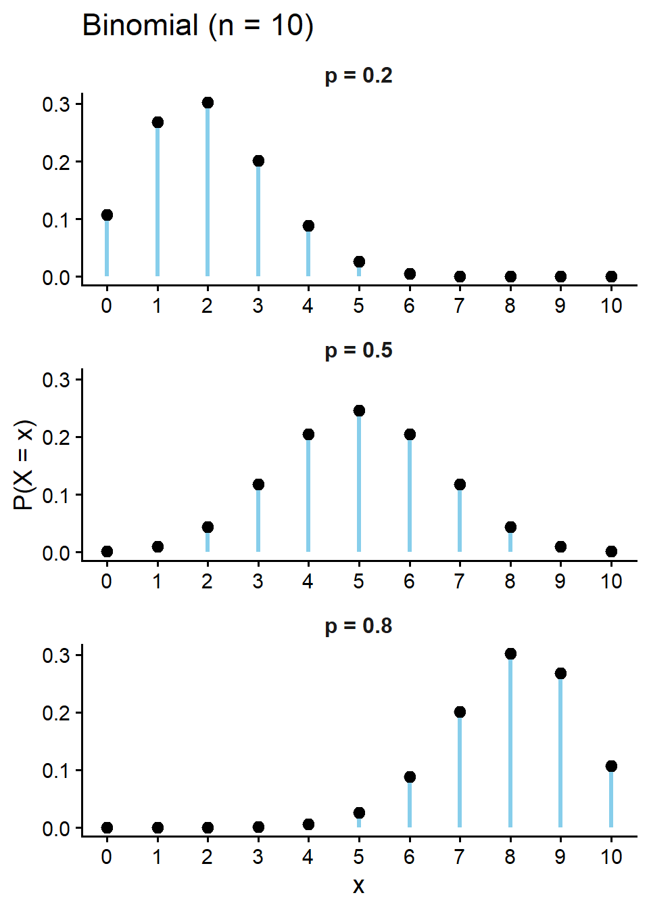
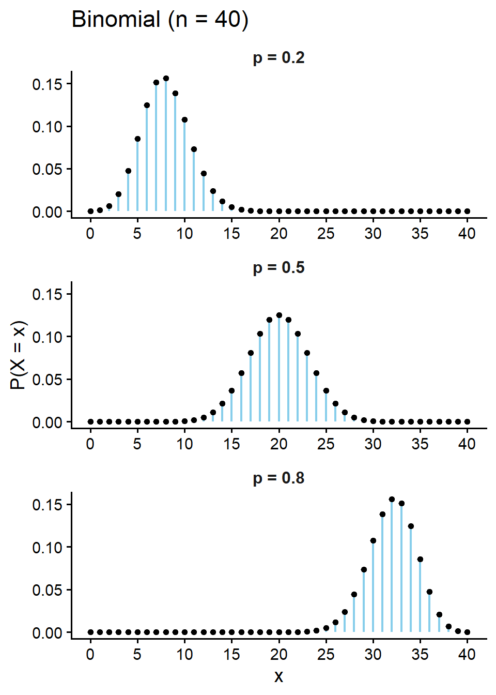
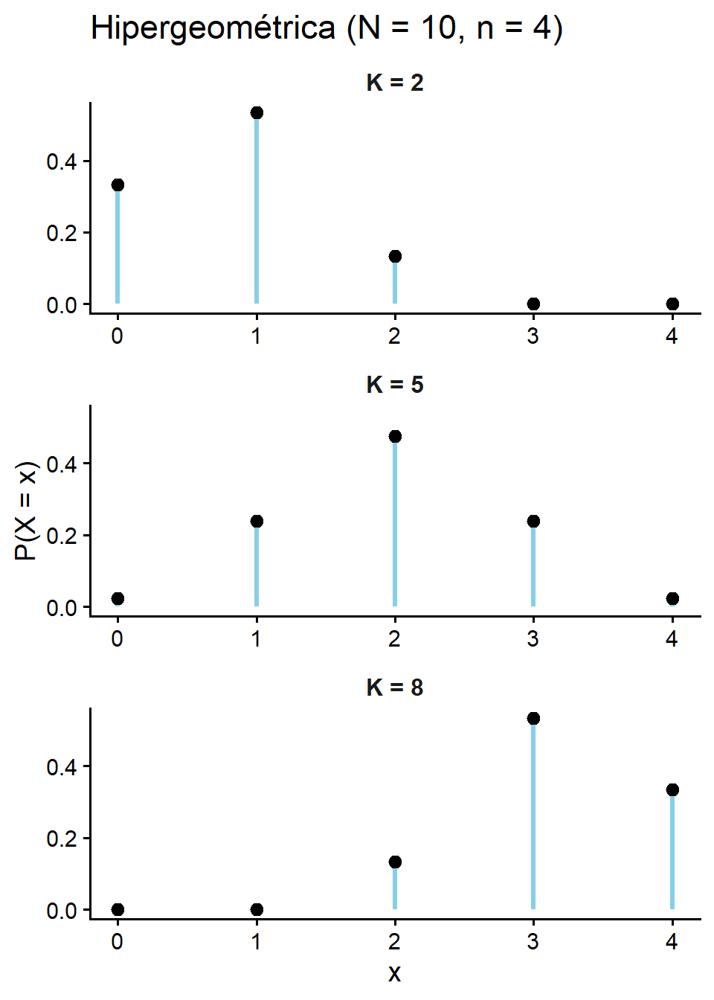
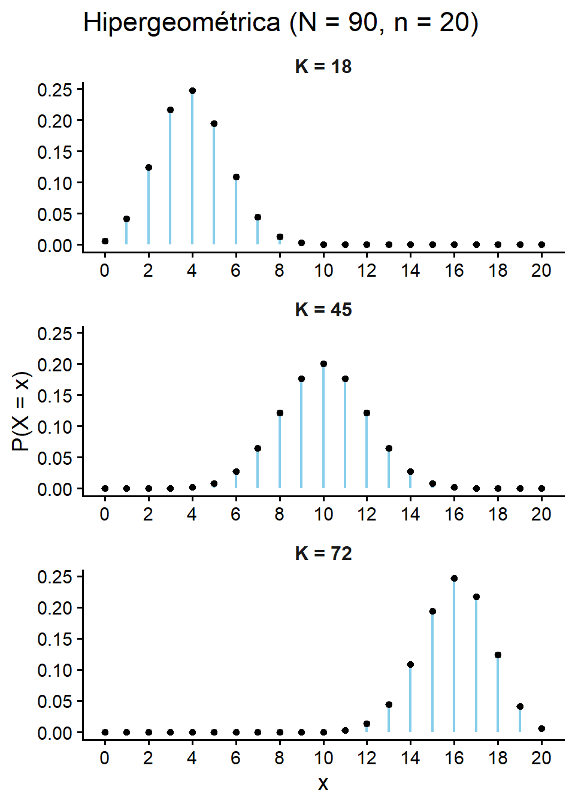

[XS-1130 Principios de Inferencia]
Modela el número de éxitos en n ensayos de Bernoulli independientes.
En un ensayo de Bernoulli solo se tienen dos resultados posibles (éxito/fracaso) con una probabilidad de éxito constante \(p\).
Aplicaciones: Control de calidad (piezas defectuosas/buenas), ensayos médicos (curado/no curado), encuestas binarias.
Ejemplo:
Función de probabilidad:
\[\Large P(X = x) = \begin{cases} \binom{n}{x} p^x (1-p)^{n-x}, \quad x = 0,1,\dots,n \\ \\ 0 \quad \text{en otro caso} \end{cases}\]
Esperanza:\(\quad E[X] = np\)
Varianza: \(\quad \operatorname{Var}(X) = np(1-p)\)


Ejemplo: En una fábrica una máquina produce 1 pieza defectuosa por cada 100. Si un inspector revisa un lote de la semana anterior con 500 piezas, ¿cuál es la probabilidad de encontrar 3 piezas defectuosas o más?
Solución: Note que \(n= 500 \text{ y } p = \frac{1}{100} = 0.01\)
\(P(X \ge 3) = P(X=3) + P(X=4)+\cdots \cdots+ P(X=499) + P(X=500)\)
\(\small \text{Realizar este cálculo a mano es poco realista.}\)
\(P(X \ge 3) = 1- P(X<3) \quad \small \text{Def de Complemento}\)
\(P(X \ge 3) = 1- \left[ P(X=0) + P(X=1) + P(X=2)\right]\)
\(P(X \ge 3) = 1- \left[ \binom{500}{0} 0.01^0 (0.99)^{500} + \binom{500}{1} 0.01^1 (0.99)^{499} + \binom{500}{2} 0.01^2 (0.99)^{498}\right] \approx 0.8766\)
Solución en R:
\(P(X \ge 3) = 1- \left[ P(X=0) + P(X=1) + P(X=2)\right]\)
[1] 0.8766142Importante
dbinom(x, size, p): calcula la probabilidad exacta \(P(X=x)\) que la variable tome el valor “x”.
pbinom(q, size, p): calcula la probabilidad acumulada \(P(X \le q)\) hasta el valor “q”.
Ejemplo: Un examen de selección múltiple consta de 10 preguntas. Cada pregunta tiene 4 opciones de respuesta (solo una correcta). Si un estudiante adivina absolutamente todas las respuestas, ¿cuál es la probabilidad de que conteste exactamente 3 correctas?
Solución: Note que \(n= 10 \text{ y } p = \frac{1}{4} = 0.25\)
\(P(X = 5) = \binom{10}{3} 0.25^3 (0.75)^{7} \approx 0.2503\)
Solución en R:
Como se desea la probabilidad exacta usamos la función dbinom(x, size, p).
\[E(X) = np = 10\cdot 0.25 = 2 \text{ preguntas}\]
Modela el número de éxitos en una muestra de tamaño \(n\) extraída SIN reemplazo de una población finita \(N\).
La población total es N = K + [N-K] (donde K = éxitos poblacionales y N-K = fracasos poblacionales).
Aplicaciones: Control de calidad en lotes pequeños, extracciones en juegos de cartas o urnas, muestreo ecológico.
Ejemplo:
En un lote de 15 piezas producidas, existen 4 con defectos. Si se extrae una muestra aleatoria de 3 piezas sin reemplazo para su inspección, ¿cuál es la probabilidad de hallar exactamente 2 defectuosa?
En una clase de 25 alumnos hay 10 becados. Si se eligen 6 al azar, cuál es la probabilidad de que a lo sumo 2 tengan beca?
Función de probabilidad:
\[ \Large P(X = x) = \begin{cases} \frac{\binom{K}{x}\binom{N-K}{n-x}}{\binom{N}{n}}, \quad \small{\text{si: } \max(0, n-[N-K]) \le x \le \min(n, K)} \\ \\ 0 \quad \text{en otro caso} \end{cases} \]
Esperanza:\(\quad E[X] = n\frac{K}{N}\)
Varianza:\(\quad \operatorname{Var}(X) = n\frac{K}{N}\left(1-\frac{K}{N}\right)\frac{N-n}{N-1}\)


Ejemplo: En un lote de 15 piezas producidas, existen 4 con defectos. Si se extrae una muestra aleatoria de 3 piezas sin reemplazo para su inspección, ¿cuál es la probabilidad de hallar exactamente 2 defectuosa? (En este ejemplo mi éxito es la pieza defectuosa).
Solución: Note que \(N= 15 \text{ , } K = 4 \text{ , } \text{ y } n = 3\)
\(\small P(X = 2) = \frac{\binom{4}{2}\binom{15-4}{3-2}}{\binom{15}{3}} = \frac{\binom{4}{2}\binom{11}{1}}{\binom{15}{3}} \approx 0.1451\)
Solución en R:
Importante
1 - dhyper(x, m, n k): calcula la probabilidad exacta \(P(X=x)\) que la variable tome el valor “x”.
2 - phyper(q, m, n k): calcula la probabilidad acumulada \(P(X \le q)\) hasta el valor “q”.
!!En R los argumentos son: m = # éxitos, n = # fracasos, k = tamaño de muestra (selección). !!
Ejemplo: En una clase de 25 alumnos hay 10 becados. Si se eligen 6 al azar, cuál es la probabilidad de que a lo sumo 2 tengan beca?
Solución: Note que \(N= 25 \text{ , } K = 10 \text{ , } \text{ y } n = 6\)
\(P(X \leq 2) = P(X=0) + P(X=1) + P(X=2)\)
\(P(X \le 2) = \frac{\binom{10}{0}\binom{25-10}{6-0}}{\binom{25}{6}} +\frac{\binom{10}{1}\binom{25-10}{6-1}}{\binom{25}{6}} + \frac{\binom{10}{2}\binom{25-10}{6-2}}{\binom{25}{6}}\)
\(P(X \le 2) = \frac{\binom{10}{0}\binom{15}{6}}{\binom{25}{6}} +\frac{\binom{10}{1}\binom{15}{5}}{\binom{25}{6}} + \frac{\binom{10}{2}\binom{15}{4}}{\binom{25}{6}} \approx 0.5447\)
Solución en R:
En una junta directiva de 20 miembros, 12 están a favor de una nueva política de inversión y 8 en contra. Se selecciona un comité de 8 personas al azar para redactar el documento final.
Históricamente, una máquina empacadora presenta un fallo de sellado en el 12% de sus envases. En un turno de control continuo, se revisa una muestra aleatoria de 30 envases de manera independiente.
Un nuevo tratamiento preventivo para alergias estacionales tiene una efectividad comprobada del 85%. El tratamiento se administra a un grupo de 25 pacientes en distintos hospitales.
Un almacén tiene un inventario de 50 computadoras portátiles de la misma marca, de las cuales se sabe en secreto que 5 tienen un defecto de fábrica en la batería. Un cliente corporativo compra 10 unidades al azar para su oficina.
En un estanque de investigación biológica hay 40 peces, de los cuales 10 pertenecen a una especie protegida. Un biólogo lanza una red y captura 5 peces al azar.
Un operador de ventas telefónicas logra concretar una afiliación en el 18% de sus llamadas. En su jornada de la tarde realiza 40 llamadas independientes.
Un lote de 60 piezas automotrices contiene 12 componentes fabricados por un proveedor externo y el resto por la fábrica principal. Un auditor de calidad toma 15 piezas al azar para una inspección.
La tasa de germinación de un tipo modificado de semilla agrícola es del 92%. Un agricultor planta 50 de estas semillas en un invernadero controlado.
Un grupo de rescate cuenta con 25 voluntarios base, de los cuales 15 tienen certificación médica avanzada. Se requiere enviar urgentemente un equipo de 7 personas al azar a una zona de desastre.
Un basquetbolista encesta 70 de cada 100 tiros libre. Si en una práctica intenta 15 tiros libres de forma independiente.
Una baraja española estándar ha sido modificada y ahora contiene 40 cartas, de las cuales 10 pertenecen al palo de Oros. En un juego de mesa, se reparte una mano inicial de 5 cartas a un jugador.
Una aplicación móvil sufre un cierre inesperado (crash) en el 2 de 100 sesiones de usuario debido a un error de memoria. En un día de monitoreo, se registran 400 sesiones de manera independiente.
Binomial
a- Steve Brunton - Bernoulli and Binomial Random Variables **
b- 3Blue1Brown - Binomial distributions
Hipergeométrica
a- Unidad de Educación a Distancia USM - Distribución Hipergeométrica
Binomial
1- Matemóvil - Distribución binomial
2- Primer - Un arma secreta para predecir resultados
Hipergeométrica
1- Equitable Equations - Hypergeometric distributions